Higashidori
Higashidori · Aomori
Higashidori
Highlighted on the Aomori map.
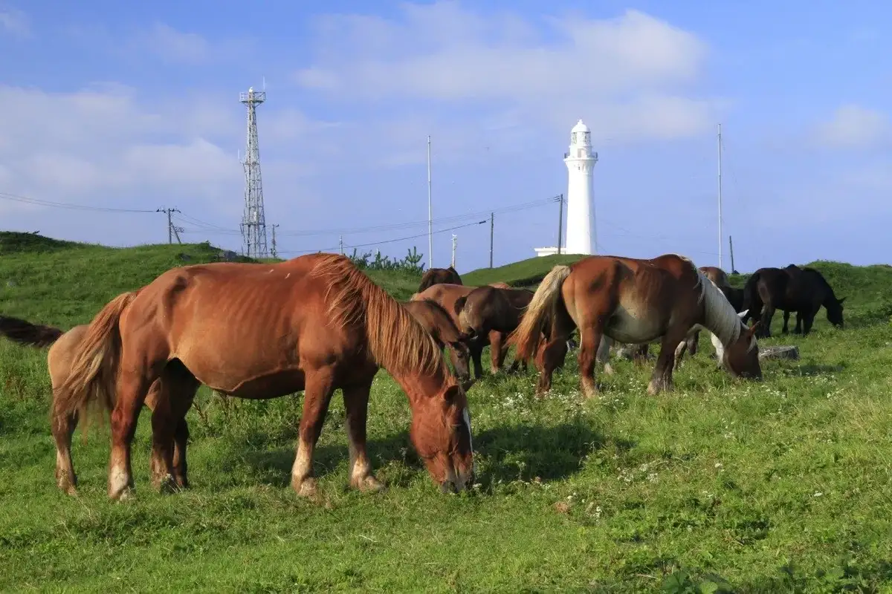
Stay
エスリバハウス
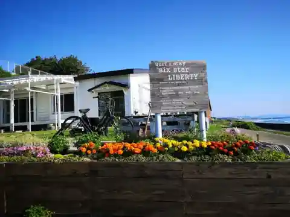
Esuriba House
Seaside holiday house in Higashidori, Aomori.
Dining
山富
Yamatomi
山河海
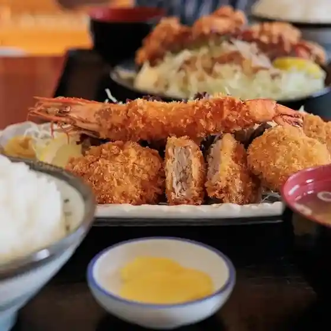
Sanga Umi
尻屋漁業協同組合
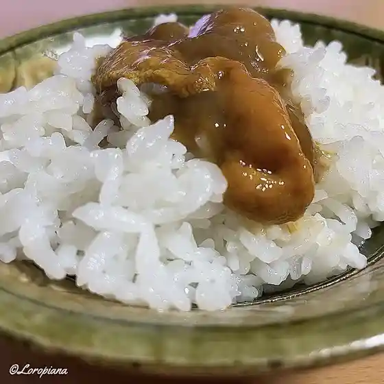
Shiriya Gyogyou Kyoudoukumiai
の〜く食堂
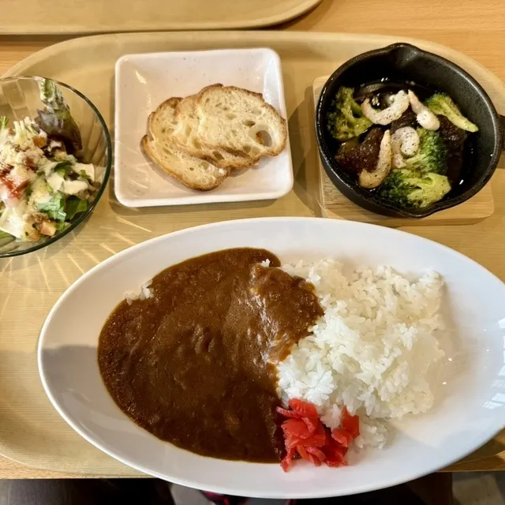
No ~ Ku Shokudou
松楽
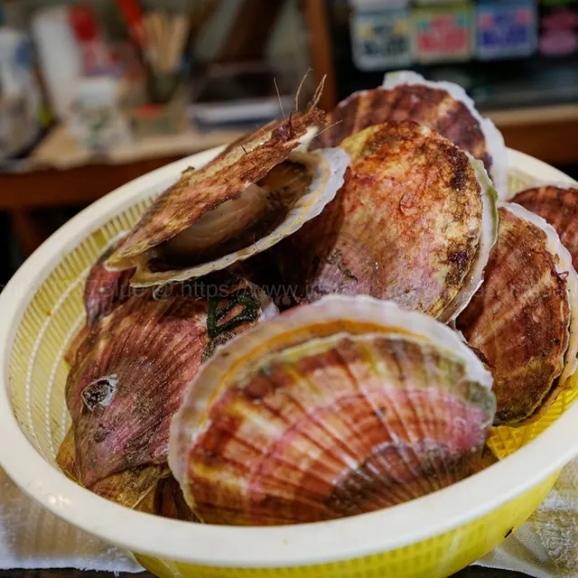
Matsu Raku
そば処田や
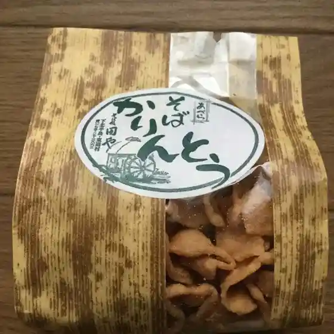
Soba Tokoro Ta Ya
手打そば 長寿庵
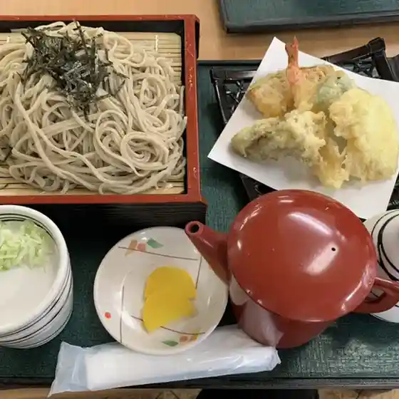
Teuchi Soba Chouju Iori
尻屋館
Shiriya Kan
レストラン むら
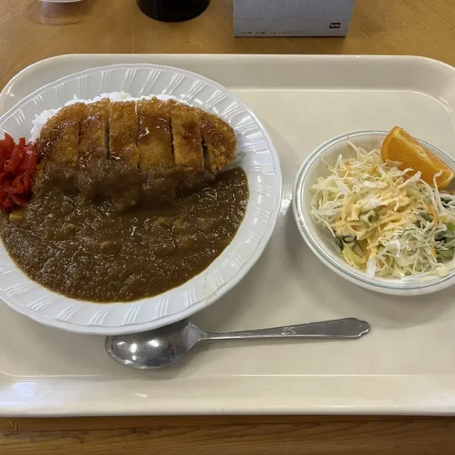
Resutoran Mura
野牛川レストハウス
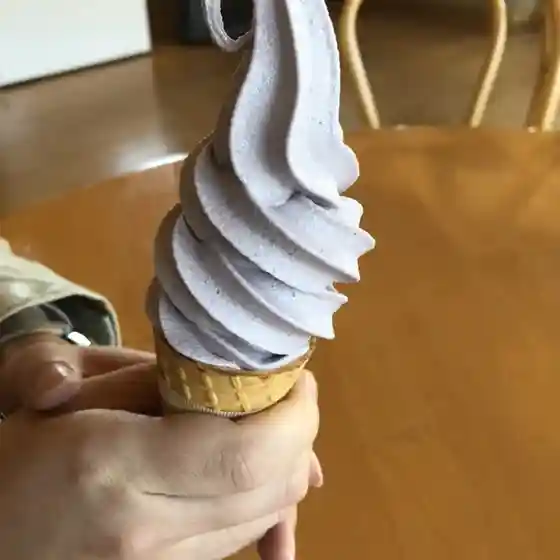
Yagyuu Kawa Resutohausu
みくに酒店
Mikuni Saketen
南通旅館
Minami Toori Ryokan
井戸道旅館
Ido Michi Ryokan
ビジネス・イン東通
Bijinesu In Higashidoori
ノーザンホテル
Noozanhoteru
やまだい
Yamadai
尻屋崎灯台売店
Shiriya Saki Toudai Baiten
やまじゅ
Yamaju
太田旅館
Oota Ryokan
ログレストラン南川
Roguresutoran Minamikawa
成田旅館
Narita Ryokan
相馬旅館
Souma Ryokan
みちのく亭
Michinoku Tei
旅館南川
Ryokan Minamikawa
Sights
Cape Shiriyazaki and Kandachime Horse
Cape Shiriyazaki, part of Shimokita Hanto Quasi-National Park, is located on the northernmost east edge of Honshu and features many wetlands and rare flowers and mountainous plants.
Shiriyazaki Lighthouse
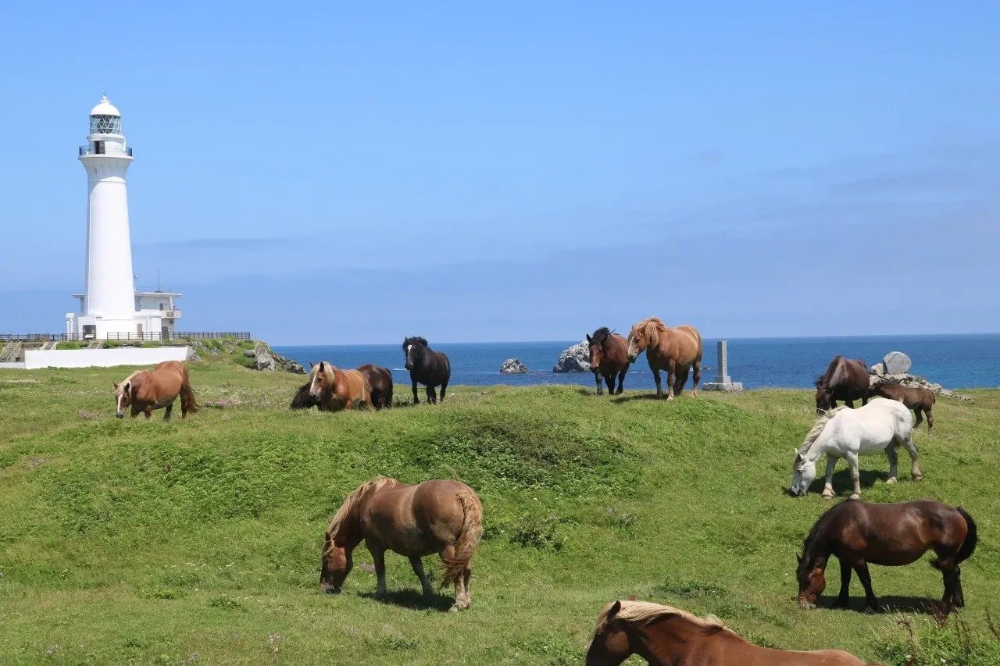
Cape Shiriyazaki is part of Shimokita Hanto Quasi-National Park. As the northern most east edge of Honshu, it features many wetlands and treasured rare flowers and mountainous plants.
Nottegawa Rest House
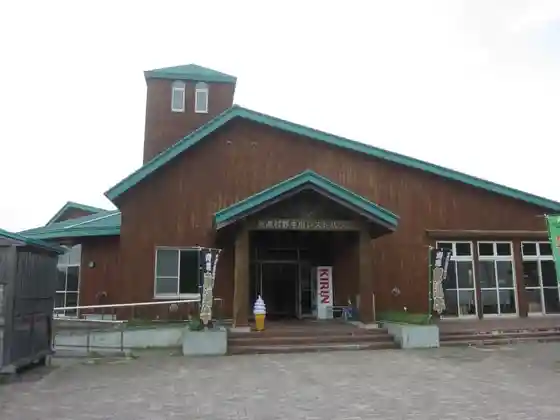
Tourist rest stop on the road to Cape Shiriya selling Higashidori beef and other local products.
Sarugamori Buried Hiba Forest
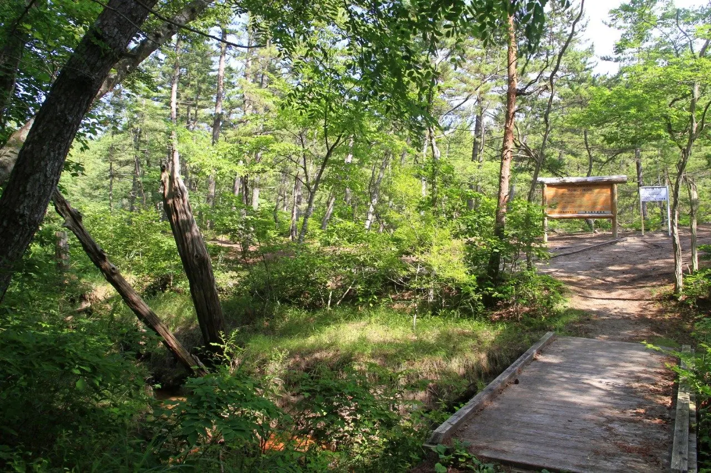
Hiba cypress trees buried by drifting sand of the 15 km Sarugamori dunes thousands of years ago.
Tonttu Village (Higashidori Nuclear Power Station PR Center)
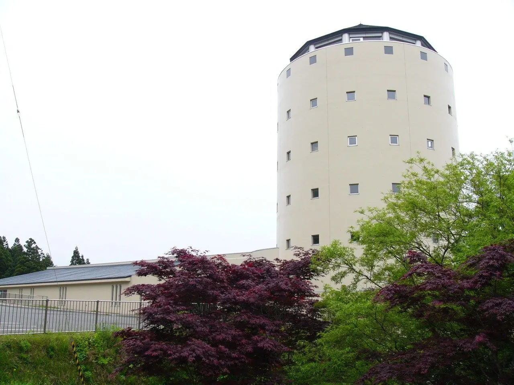
Nature-themed visitor center with a 20 m observation room and exhibits on nuclear power and local wildlife.
Cape Monomi
Cape at Higashidori's southern edge where Shiranuka Lighthouse stands on a rock above the Pacific.